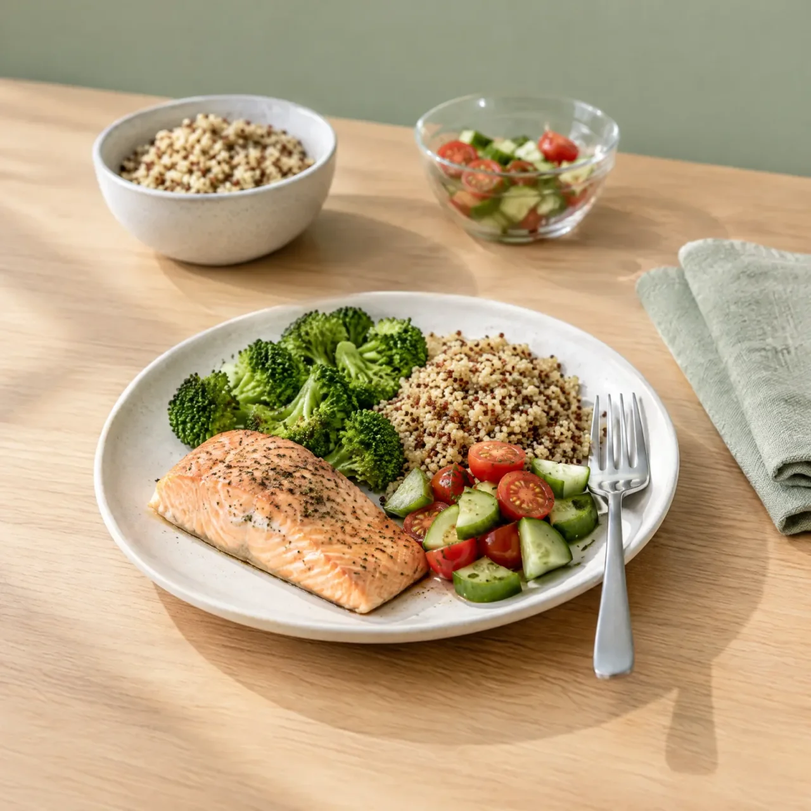
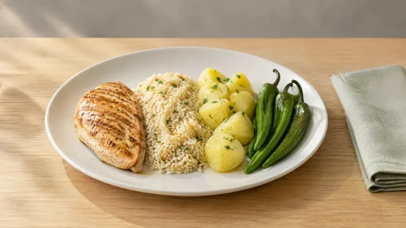
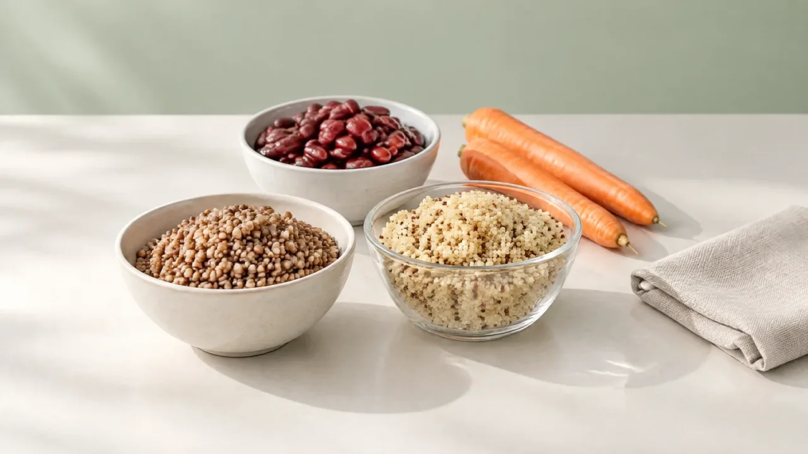
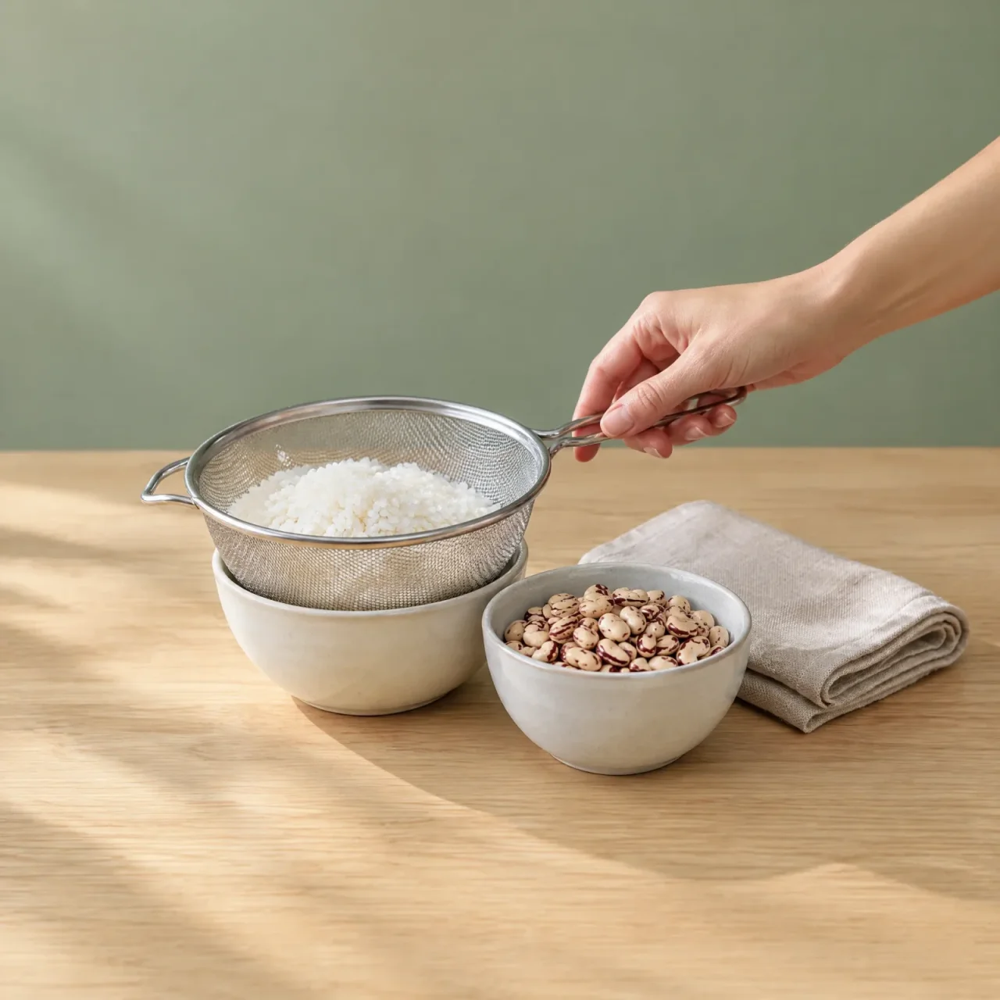
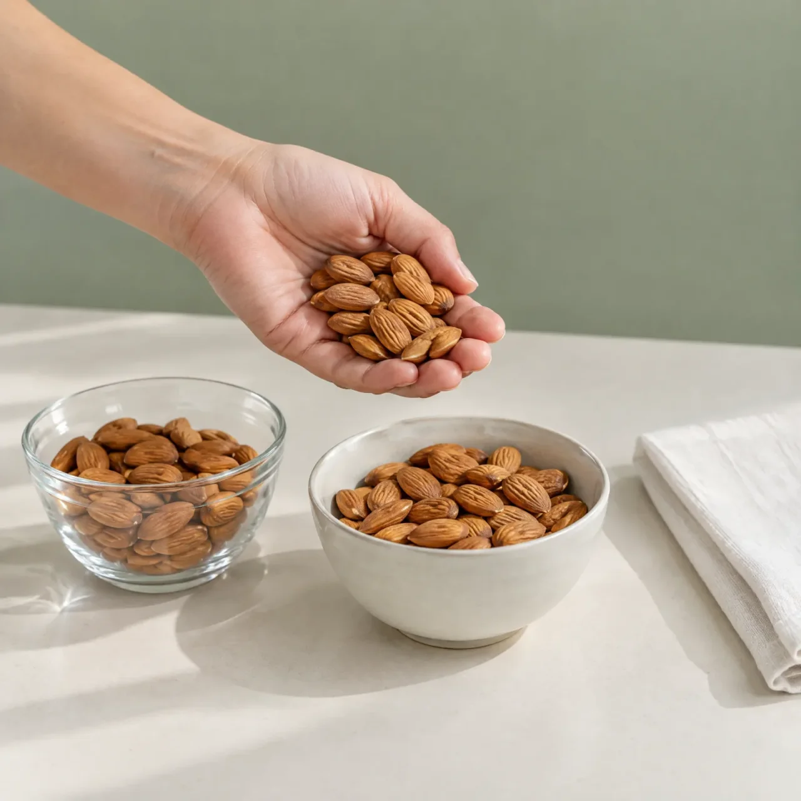
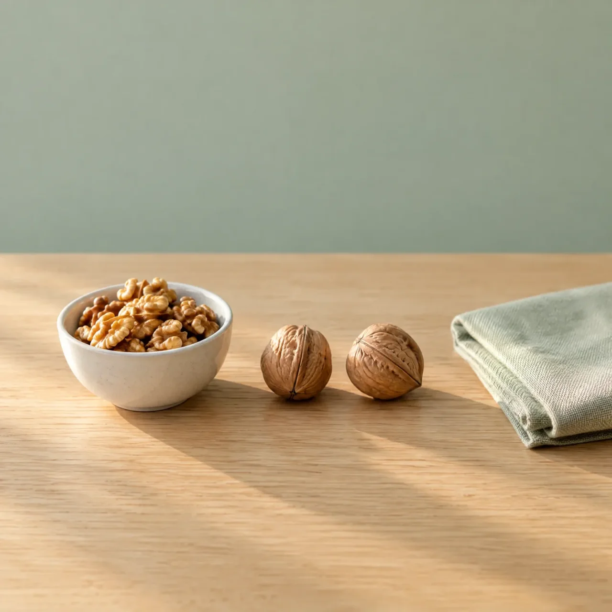
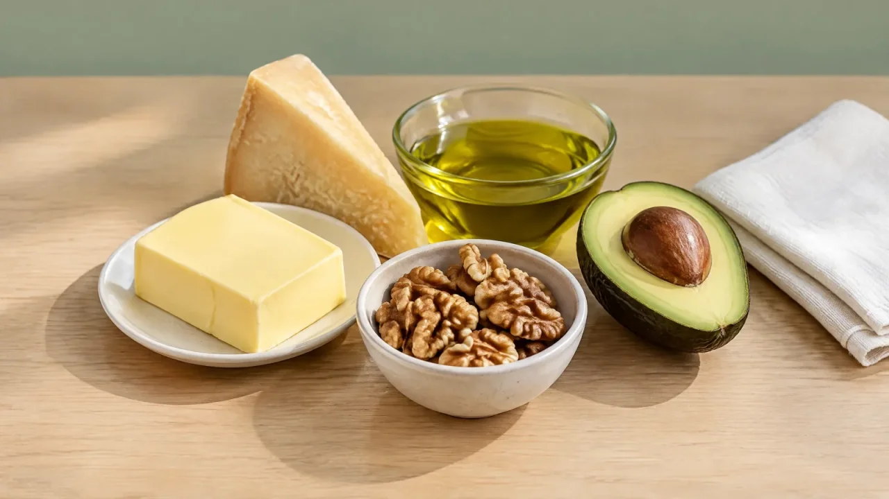

Beslenme
Somon ve Tavuk Göğsü
İki besini yan yana koy; kalori, makro ve mikro farklarını görsellerle gör, hangisini ne zaman seçeceğini öğren.
- 541
- besin kütüphanede
- 4
- hazır karşılaştırma
Ölçü

Tavuk Göğsü
Et & Tavuk · 100 g başına
151kcal
Daha düşük kalori Daha yüksek protein Daha az doymuş yağ Daha yüksek demir Daha yüksek magnezyum
Besin kartı Makro dağılımı
Enerji Nereden Geliyor?
Protein ve karbonhidrat gramı 4, yağ gramı 9 kcal sayılır; oranlar bu yaklaşık hesaptan gelir.
Somon
100 g başına
- Protein
- 22,1 g%44
- Karbonhidrat
- 0 g%0
- Yağ
- 12,4 g%56
- Lif
- 0 g
Tavuk Göğsü
100 g başına
- Protein
- 30,5 g%81
- Karbonhidrat
- 0 g%0
- Yağ
- 3,2 g%19
- Lif
- 0 g
Yan Yana Değerler
Her satırda uzun çubuk o değeri yüksek olan besindir.
SomonTavuk Göğsü
Kalori206 kcal
151 kcal
Protein22,1 g
30,5 g
Toplam yağ12,4 g
3,2 g
Doymuş yağ2,4 g
1 g
Karbonhidrat0 g
0 g
Lif0 g
0 g
Şeker0 g
0 g
Öne çıkan farklar
İkisini Ayıran Değerler
Aynı ölçüde karşılaştırıldığında en belirgin farklar.
Somon
Daha yüksek C vitamini
Karşısındakinde 0
Somon3,7 mg
Tavuk Göğsü0 mg
Somon
Daha yüksek D vitamini
Karşısındakinde 0
Somon13,1 µg
Tavuk Göğsü0 µg
Tavuk Göğsü
Daha az doymuş yağ
%59 daha az
Somon2,4 g
Tavuk Göğsü1 g
Tavuk Göğsü
Daha yüksek protein
%38 daha fazla
Somon22,1 g
Tavuk Göğsü30,5 g
Ayrıntılı tablo
Bütün Değerler
Vitamin ve mineraller dahil kayıtlı her değer. Kaydı olmayan değer boş bırakılır, tahmin edilmez.
Besin Değerleri
Karşılaştırma 100 g üzerinden.
| Öge | Somon | Tavuk Göğsü | Önde |
|---|---|---|---|
| Kalori | 206 kcal | 151 kcal | – |
| Protein | 22,1 g | 30,5 g | Tavuk Göğsü |
| Toplam yağ | 12,4 g | 3,2 g | – |
| Doymuş yağ | 2,4 g | 1 g | Tavuk Göğsü |
| Karbonhidrat (lif dahil) | 0 g | 0 g | – |
| Lif | 0 g | 0 g | aynı |
| Şeker | 0 g | 0 g | aynı |
| Glisemik değerler (tahmini, uzman onayı bekliyor) | |||
| Glisemik indeks | veri yok | veri yok | – |
| Glisemik yük | veri yok | veri yok | – |
| Vitamin ve Mineraller | |||
| Demir | 0,3 mg | 0,5 mg | Tavuk Göğsü |
| Kalsiyum | 15 mg | 5 mg | Somon |
| Magnezyum | 30 mg | 34 mg | Tavuk Göğsü |
| Potasyum | 384 mg | 391 mg | yakın |
| Sodyum | 61 mg | 52 mg | Tavuk Göğsü |
| Çinko | 0,4 mg | 0,9 mg | Tavuk Göğsü |
| Fosfor | 252 mg | 258 mg | yakın |
| A vitamini | 69 µg | 10 µg | Somon |
| C vitamini | 3,7 mg | 0 mg | Somon |
| D vitamini | 13,1 µg | 0 µg | Somon |
| B12 vitamini | 2,8 µg | 0,2 µg | Somon |
| Folat | 34 µg | veri yok | – |
| Kolesterol | 63 mg | 104 mg | Somon |
Seçim rehberi
Hangisini Ne Zaman Tercih Etmelisin?
Tablodaki farklardan kurallarla çıkarıldı. Kişisel durumun için diyetisyenine danış.
Somon Seç
- Az hacimde daha çok enerji gerektiğinde
- Kalsiyum alımını artırmak istediğinde
- C vitamini almak istediğinde
Tavuk Göğsü Seç
- Balık hassasiyetin varsa
- Aynı miktarda daha az kalori almak istediğinde
- Öğünün proteinini artırmak istediğinde
- Doymuş yağı sınırlaman gerektiğinde
- Demir alımını desteklemek istediğinde
Glisemik değerler tahminidir, uzman onayı bekliyor. Rozet ve öneriler de bu tahmine dayanır. Değerler uluslararası glisemik indeks tablolarından alınmıştır ve her besin için kayıtlı değildir; yerel ürün ve pişirme yöntemine göre değişir. Karbonhidratlar kaynaklar arasında tutarlı olsun diye lif dahil gösterilir.
Omega-3 bu veri setinde ayrı bir öge olarak yok, somonun yağ kalitesi tabloya yansımaz.
Somon için glisemik indeks, glisemik yük verisi yok; Tavuk Göğsü için glisemik indeks, glisemik yük verisi yok; bu ölçütler sıralamaya girmedi.
Hazır ikililer
Hazır Karşılaştırmalar
En çok merak edilen ikililer.


Kinoa vs Pirinç
İki pişmiş tahıl: lif, protein ve tahmini glisemik yük.
Somon vs Tavuk Göğsü
Protein yoğunluğu, yağ ve mikro besinler.


Badem vs Ceviz
Bir avuç kuruyemişte enerji, protein ve lif.


Zeytinyağı vs Tereyağı
İki yağ: kalori, doymuş yağ ve alerjen farkı.